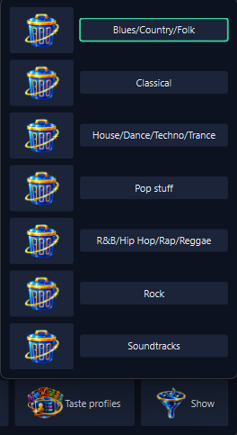

Music you do not own yet
Everything else Stellody does concerns the music on your disk. This asks the opposite: given what you have, what is worth reaching for next. Tick the genres worth looking in and Stellody asks two public music catalogues what those artists released that you do not hold and who else sounds like them.
![The What the last discovery run found window, opened across a wide screen. A line at the top says the search looked in 15 genres and lists them; the next says the answer is filtered to Dance, EDM, Electronic, Ambient, UK Garage, House, Deep House, Progressive House, Tech House, Techno & Electro and Techno. Under it a key names the three kinds of row: an artist or a series you hold, drawn in blue, with albums from it you do not hold underneath; a similar artist you hold nothing by, drawn in amber, which fetches its albums when opened; every other line, which is an album title. A strip reads Open an amber artist to fetch its albums. The answer is dealt into three columns: Agents Of Time with 13 albums and 7 similar artists, then Alan Walker with 19 albums and 3 similar artists; Agoria with 27 albums and 8 similar artists; Aim with 11 albums and 5 similar artists, then Air with 30 albums and 2 similar artists. Similar artists such as Woo York, Bonobo and Booka Shade are listed in amber. Every album has a tick box; most carry the year they first came out beside the title, while a few the catalogue gives no year for carry none; two of Agents Of Time's albums are ticked. One row runs under the columns: Close at the left; Previous and Next with the words Page 3 of 63 between them in the middle; Filter, Copy and Find in shops at the right.](screenshots/discovered.png)
What the search found, a page at a time. Blue is an artist or a series you hold; amber is an artist you do not.
You choose what it looks at
The genres you tick decide which of your artists are named. What goes out is a subset you chose, never an inventory of everything you own.
What goes out, in full
Those artist names and the identifiers the catalogue gives back. For a name several artists share, up to three of your album or track titles; with Other volumes of series ticked, your compilation titles in those genres. Plus fixed request settings and a user agent naming Stellody, its version and a contact address. Nothing about you or your machine.
Ready the moment you ask
The dialog is built unseen as Stellody opens, so it appears at once. Select all ticks all 57 genre boxes, then offers Clear.
Artists on compilations
Various Artists names nobody, so left clear it adds nothing. Ticked, the search asks about the artists on the tracks instead, still only in the genres you ticked.
Other volumes of series
Hold Global Underground: Adapt #2 and #6; the answer offers the four you are missing. A mix filed under its DJ counts too, so Fabric 99: Sasha leads to the rest of Fabric. Nothing you already hold is offered back.
DJ mixes
Ticked to begin with, so an artist's list includes the mixes they made, such as Sasha's Involver. A plain compilation or a greatest hits package is never offered.
It says what the extras cost
With compilations or series ticked, a line says how many artists and series have never been looked up and roughly how many minutes they add. The dialog remembers all three boxes.
From the years you choose
Released from and to limit what comes back, never what is learned from, so an old album can lead to a new record. A record counts from the year it first came out; one with no stated year is left out while years are set.
Keep a selection as a taste profile
Press Find on a selection you have not kept and the dialog offers to save it under a name: the genres, the Include boxes and the years. A name already in use asks before replacing.
Put one back in a single choice
The Taste profiles button lifts your profiles in alphabetical order, each with a delete button that asks first. Choose one and its whole selection returns. Profiles last between sessions and go into a backup.
The same profiles in both filters
Filter by genre and Filter the answer offer them too, ticking the genres and setting the years. Filtering by genres no profile holds offers to keep them. It is one list: delete a profile anywhere and it is gone everywhere.
Three bars, one per stage
Looking up, Checking series and Checking styles, the last also Checking years when years are set. A stage that does not run leaves its bar empty. Hovering names who is being asked about.
Time left, honestly counted
A search takes minutes, because the catalogues ask to be questioned slowly. The time left counts the stages still to come and is timed from the artists actually asked about.
The music keeps playing smoothly
What earlier searches learned is read once a session and written at quit, so opening, starting or stopping a search does not make the sound stutter.
Stop means stop
While a search runs, its button wears a cross. One press ends it there and then, with nothing to confirm; the request in flight is dropped rather than waited out.
What it found, read plainly
Artists and series you hold appear in blue with their missing albums beneath; artists you hold nothing by appear in amber. Every line also says which it is in words. An album carries its first release year where the catalogue states one.
A page at a time
The answer is dealt into up to three columns and turned a page at a time. Ticks stay put as you turn, so a shop gets everything you picked.
Filter by kind
Filter the answer starts with Albums, DJ mixes, Series and Similar artists, all ticked. Clear one to hide it; a heading left empty is not shown.
Filter by genre
Tick some of the genres that search looked in and the pages are dealt again. A similar artist is judged by the genres they mostly play, else by the artist they were suggested for.
Filter by year
The same two year fields Discover has. Only albums first released in those years are shown; similar artists carry no year, so they stay. Filtering never takes a tick away.
Nothing it learned is lost
Every answer is kept the moment it arrives, so a search stopped or cut off loses nothing. Running it again asks only for what is missing, which is why a second attempt is quick.
It leaves out what you own
A remaster of a record you hold is the same record; a live album of the same name is not. Titles match once case, Unicode form and edition wording are set aside.
One name, several artists
Where the catalogue holds several artists under one of your names, Stellody asks who is credited on a record you hold. It never picks one on a guess.
It says who it could not answer for
Names the catalogue could not answer, holds nobody under or cannot tell apart are counted separately. A red badge on the button beside discovery opens them, so a partial answer never reads as a complete one.
Then to a shop, if you want one
Tick albums and choose a shop: your browser opens its own search for each. No affiliation, no referral and nothing taken from a sale. Copy puts the ticked albums on the clipboard instead.
The shop list is yours
Add, edit, delete or drag shops into order. Try opens a shop's search before you save it. An update never brings back a shop you deleted; one press restores the originals.
![The Discover new music window: the same genre catalogue the filter uses, in three columns of tick boxes. Every genre that has styles carries an arrow beside it that folds them away. Dance, Electronic, House and Techno & Electro are open, with their styles indented beneath them; Pop and Rock are folded. A selection of dance and electronic music is ticked: EDM under Dance; Ambient, Drum n Bass, Dubstep and UK Garage under Electronic; Deep House, Progressive House and Tech House under House; EBM, Techno and Trance under Techno & Electro. Beneath the genres, under Include, three boxes are ticked: Artists on compilations (Various Artists), Other volumes of series and DJ mixes. A line beneath them says 5 series on compilations in these genres have not been looked up yet, under a minute more at the pace MusicBrainz allows, longer when it is busy. Below that, the Released from and to year fields, both reading any year. A last line says to tick the genres then press Find; the window closes and the toolbar reports on the search. Close sits alone at the bottom left; Select all, Taste profiles (ringed in green) and Find sit at the bottom right.](screenshots/discover.png)
Tick what to look in; add years to be offered music from those alone. Taste profiles puts back a selection you kept. Find closes this window; the search then reports from the toolbar.

The same profiles in Filter by genre, in alphabetical order. Choose one to put its genres and years back; the button at its left deletes it, after asking.
![The Find these in a shop window, saying 1 album is ticked and that choosing a shop leaves this window open. Eight shops are listed one to a row, each with a note saying what it stocks: 7digital, Boomkat, Qobuz, Bandcamp, Bleep, Presto Music, ProStudioMasters and Beatport. Each row has a grip at its left for dragging it up or down, with an edit button and a delete button at its right. Close sits alone at the bottom left, ringed in green; Add a shop and Put the original shops back sit at the bottom right.](screenshots/findinshop.png)
Choosing a shop opens that shop's own search for each ticked album. The window stays open so prices can be compared; the list itself is yours to change.